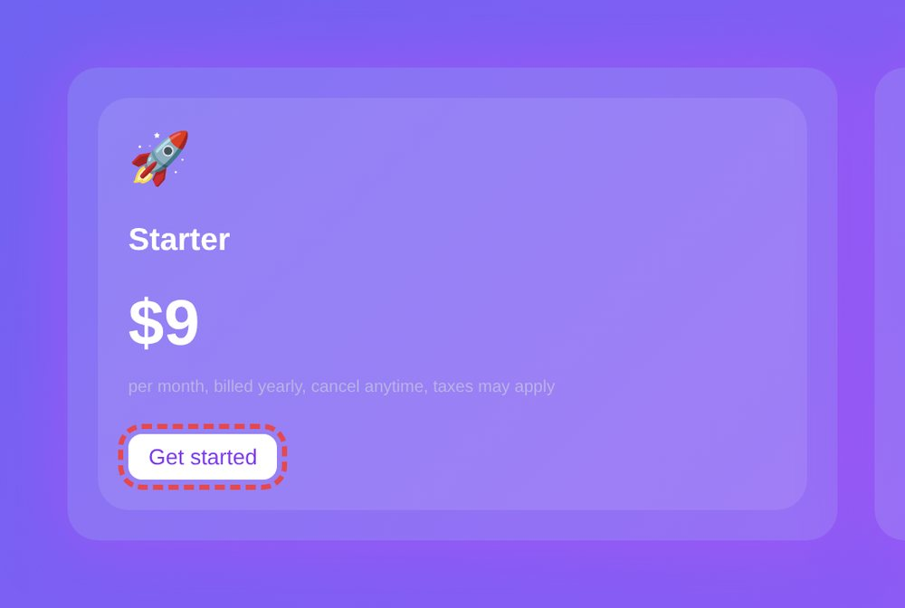
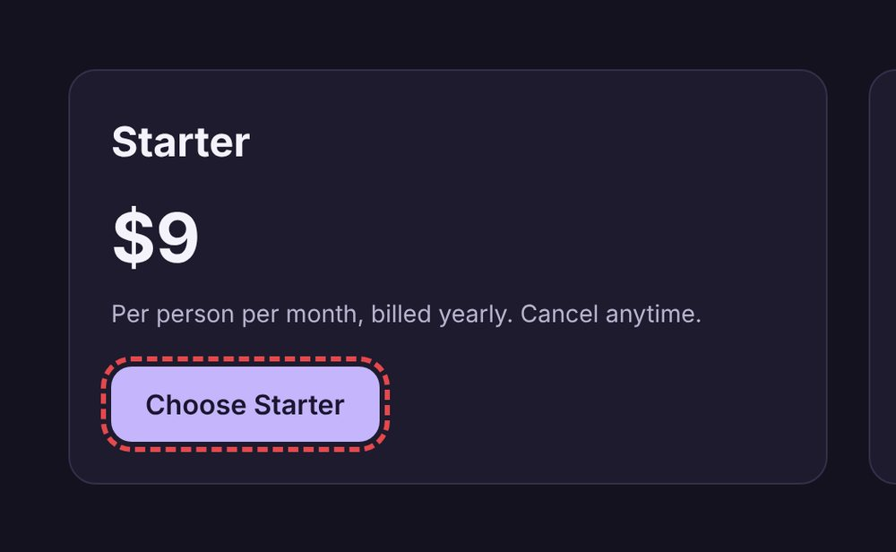

Buttons a keyboard can't reach
If it does something, it is a <button> or an <a href>, never a <div>.


The number
- Before
- 0 of 2“Get started” buttons reachable with Tab; Tab stopped only on “Click here”
- After
- 3 of 3controls in the Tab order, each with a 2 px focus outline
Why it happened. The buttons were <div class="cta" onclick="…">. A div has no role, no keyboard focus and no Enter key behaviour, so screen readers and keyboard users never find it.
The fix
<a class="cta" href="/signup?plan=starter">Choose Starter</a>
.cta { display: inline-flex; min-height: 44px; }
.cta:focus-visible { outline: 2px solid currentColor;
outline-offset: 3px; }Check your own page
Click in the address bar, then press Tab repeatedly. Every control should get a visible ring, in reading order. If one never lights up, it is not a real control.
Where these numbers come from. One pricing page an AI tool built from a single prompt, measured in Chromium at 1440 × 900 and 390 × 844 on 24 November 2026, before and after fixing exactly what the checks reported (38 → 66 of 66). Both pages are public.
Before pageAfter pageGuide: WCAG 2.2 AA checklist for designers